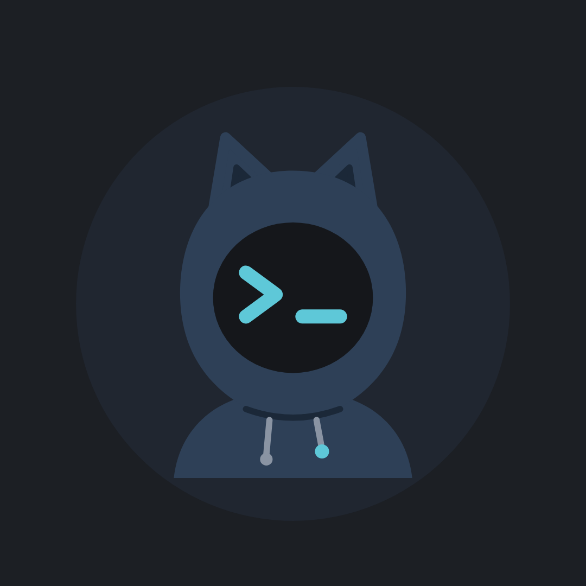

0xhacky
Videos cortos de ciberseguridad, hacking ético y noticias de inteligencia artificial, en español. Publicamos en Instagram, TikTok y YouTube Shorts como @0xhacky.
La aplicación "0xhacky publicador" es una herramienta interna que solo usa el propio canal para subir sus videos a sus cuentas de YouTube y TikTok. No da servicio a otras personas.
Esta herramienta usa los YouTube API Services para subir los videos del canal youtube.com/@0xhacky.
Política de privacidad · Términos de uso · Términos de YouTube · Privacidad de Google
Contacto: larprhack@gmail.com